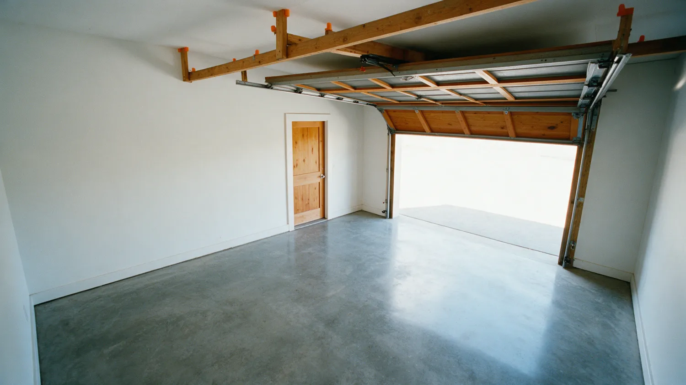
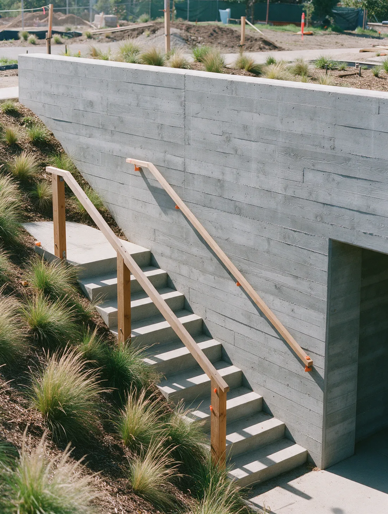

Concrete doesn't do second chances.
Driveways, patios, stamped concrete, curbs, stairs and foundation repair across Goodyear and the West Valley. Done right, the first time.
A truck of concrete gives you about ninety minutes.
Then it starts to set. No undo. No second pour.
Skip the prep, add a little water, rush the finish, and you'll see it in the cracks for years.
This is not a weekend project.


The rushed driveway
Water on the base, a hose in the form.
A wet, loose base settles. The slab on top of it follows.
Soupy mix, poured fast.
Extra water makes concrete easy to place and much weaker once it cures.
Then the cracks show up.
No steel, no planned joints, so the slab picks its own places to break.
And then comes the teardown bill.
Breaking out and re-pouring costs more than doing it right once.

Same driveway. Which crew do you want?


The right way
Same job. Done by pros.
- Compacted gravel base, graded to drain
- Rebar on chairs, so steel sits where it belongs
- Mix ordered for the job. No water added on site
- Placed, screeded and floated on schedule
- Joints cut and the slab cured, not left to chance
Poured right. On schedule.
- 5.0 stars from 31 Google reviews
- Based in Goodyear, AZ
- Detailed estimate up front
What we pour.
Driveways, patios, stamped concrete, curbs and gutters, stairs and foundation repair. Pick one to see how it works.
Concrete Driveways
Installation, maintenance and repair, with finish and style options to fit the house.
See how we do itConcrete Patios
Custom outdoor spaces, designed around how you use the yard.
See how we do itStamped Concrete
Patterns, texture and color for driveways, patios and walkways.
See how we do itConcrete Curbs and Gutters
Concrete edges that guide water off the pavement and away from the property.
See how we do itConcrete Stairs
Poured concrete steps and landings for entries, patios and yards.
See how we do itFoundation Repair
Cracked or settling concrete at the foundation, found and fixed at the cause.
See how we do itNot sure which one you need?
What we build.
Example photos.





How we keep it honest.
Concrete is hard to judge until it's too late to change. So we put the important parts in front of you early.
-
A detailed estimate up front.
You get the details of the job and the price before work starts, so you know what to expect.
-
You stay in the loop.
From the first consultation to the finished job, you hear what is happening at every stage.
-
Local to Goodyear.
Based in Goodyear, Arizona, and working across the West Valley and the Phoenix area.
Based in Goodyear, Arizona.
Goodyear Concrete Contractor is a concrete contractor based in Goodyear, Arizona. The services are driveways, patios, stamped concrete, curbs and gutters, stairs and foundation repair for homes in Goodyear and the surrounding West Valley.
Customers who hired them say the crew was professional, easy to work with and left the job site clean.
- Based in
- Goodyear, Arizona
- Google rating
- 5.0 from 31 reviews
- Phone
- (623) 866-7647
Where we work.
Serving Goodyear and the West Valley and the towns around it.
- Goodyear
- Avondale
- Buckeye
- Tolleson
- Verrado
- Waddell
- Sun City
- Chandler
- Mesa
- Tempe
- Scottsdale
Not on the list? Call and ask.
Call (623) 866-7647What customers say.
Hover a bubble to read it.Tap a bubble to read it.
5.0 average from 31 reviews. Read them on Google
My parents wanted a walkway from the driveway to the side yard because the gravel path was getting dangerous. The new concrete path looks clean and is slightly textured so it’s not slick. Excellent!
Carlos and his team did an amazing job at my home extending my driveway. They came out and were respectful to my property and my neighbors. They cleaned up the job site very well. I am so pleased they completed this job in one day.
I had a driveway done with colored borders. Turned out great. Carlos answered all my questions about the job and process.
He and his crew were professional and very easy to work with. We made some changes as the work progressed which were no problem. We are extremely pleased with the work.
Carlos gave quality RV sidewalk cement work. He cleaned up the area. His price for the work was what we appreciated.
Booking is simple.
-
Call or send the form
Tell them what you want built and where.
-
Talk through the job
A consultation to go over what you want and what the site needs.
-
Get a detailed estimate
Price and scope before work starts.
-
The work gets done
Built and finished, with updates along the way.
Questions we hear a lot.
How long until I can walk or drive on new concrete?
Most slabs take foot traffic after about 24 to 48 hours. Cars and light trucks usually wait around seven days. Concrete keeps gaining strength for roughly 28 days.
How does Arizona heat affect a concrete pour?
Heat makes concrete set faster, so summer pours are usually scheduled for early morning and the surface is kept from drying too fast. Rushed finishing in hot weather is a common cause of cracks and a weak surface.
How thick should a driveway be?
Four inches is common for cars. Heavier vehicles or weak soil call for more thickness, steel, or both. The right thickness depends on what will drive on it.
Do I need a permit or HOA approval?
It depends on the city and the job. Work in the public right of way, like a driveway apron, usually needs a city permit, and many Goodyear HOAs approve color and layout first. Ask before work starts.
What affects the price of a concrete job?
Area, thickness, prep, access and finish. A detailed estimate before work starts shows what is driving the number.
Should concrete be sealed?
For most driveways and patios, yes. A sealer slows staining and surface wear, and on colored or stamped concrete it holds the color against the sun. Plan to reseal every few years.
Ready when you are.
Call, or send the details and they will get back to you as soon as possible.